銀行問い合わせの77分類で Claude 3モデルを比べた。追加実験（最終評価500件、仮説は実行前に固定）では、API単価が最も安い Haiku は、目標信頼性90%を満たすのにレビューを52.6%要した。1件当たり総コストは70円で、Opus（41円）・Sonnet（39円）の約1.7倍になった。正答率の差が2.2ptと小さい Opus と Sonnet は、必要レビュー率の差が目標によって出たり出なかったりした。統計的な保証を付けるための安全余裕によって、レビュー量は6〜18pt増えた。追加実験 v4 では、Haiku の予測をそのまま使い、Opus にその予測を検証させた。その検証を含む信号で振り分けると、目標90%に必要なレビュー率が48.6%から24.8%に下がった。同じ回答に強いモデルの検証を加えた2モデルの系では、必要な人手が約半分になりうる。この結果は v5 の新しい test でも再現し、開発データを別の500件に入れ替えても成り立った。一方、「安いモデル＋強い検証」と強いモデル単独の総コストの差は示せず、目標を変えると大小が入れ替わった。なお、適格の判定と総コストの順位は、人間のレビューが常に正しい（a_h=100%）という仮定のもとでの結果である。論文の主仮定 a_h=90% では、目標90%はどの構成でも達成できなかった。
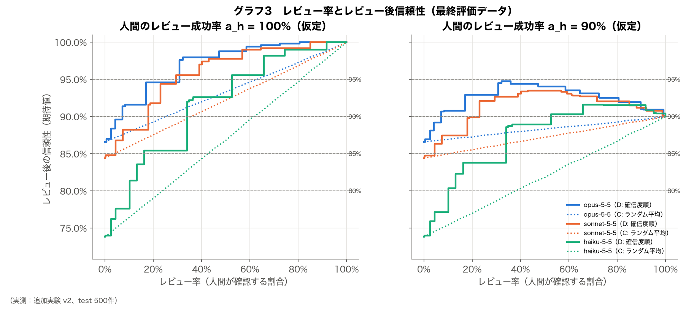
必要レビュー率の値は、目標の決め方・安全余裕 δ・人間の成功率 a_h の仮定に強く依存する（第4章）。
業務にAIエージェントを入れるとき、モデルの比較は正答率（ベンチマークのスコア）で行われることが多い。しかし実際の業務では、AIの出力をそのまま使うことはまれで、一部を人間が確認する。運用コストの大半はこの人間の確認作業である。
そうであれば、問うべきは「AIが何%正しいか」だけではない。「要求される品質に達するのに、人間が何%を確認すればよいか」と「そのときの総コストはいくらか」も問う必要がある。前者が同じでも、後者は、AIが自分の誤りをどれだけ見分けられるかで変わりうる。
本レポートは、この考え方を体系化した READY 論文を紹介し、公開データセットを使った独自検証の結果を報告する。検証は2段階で行った。予備実験（v1）で傾向を見て、その傾向を仮説として実行前に固定し、重複のない新しいデータで追加実験（v2）を行った。
論文Chatrath ほか（Scale AI）「READY or Not: Reliable Enterprise Agent Deployment」arXiv:2609.02095、2026年9月2日投稿。
READY は、エージェント単体ではなく「エージェント＋人間のレビュー方針」の組を評価する。手順は3段階である。
信頼性は R = c·a + (1−c)·a_h で表す。c は AI に任せる割合、a はその部分の正答率、a_h は人間レビューの成功率（仮定）である。
論文の主な結果（CliniCARE-Bench：臨床監査750件、16システム）
新規性：確信度でAIに任せる範囲を決める考え方（選択的予測）自体は既存である。論文の新しさは、仮定（a_h）、安全余裕（δ）、開発と保留の分離、片側下限による判定を、導入判断の手続きとしてまとめ、多数のエージェントで示した点にある。
公式ブログには「判定が正反対になる」といった論文より強い表現があるため、引用は論文の記述に合わせた。詳細は docs/paper_review.md。
| 項目 | 予備実験 v1 | 追加実験 v2 |
|---|---|---|
| 開発データ | train から 100件 | v1 の100件＋train から400件＝500件 |
| 最終評価データ | test から 200件 | test から 500件（v1 と重複なし） |
| 仮説 | なし（探索） | v1 の傾向から8つ立て、実行前に固定（文書のハッシュ値を記録） |
| API費用 | $0.77 | $2.10 |
| 共通の条件 | 内容 |
|---|---|
| データ | BANKING77（銀行問い合わせ、77クラス、CC BY 4.0）。元の train/test 分割を維持し、クラスごとに均等に層別抽出 |
| モデル | claude-opus-5-5、claude-sonnet-5-5、claude-haiku-5-5。effort=low、max_tokens=4000。Temperature は API 仕様上指定できない |
| 入力・出力 | 問い合わせ文と77ラベル名を同一プロンプトで渡し、構造化出力で {"predicted_label", "confidence"} を得る。confidence は自己申告 |
| 失敗の扱い | 誤答として分母に残し、最優先でレビューする設計。今回は v1・v2 とも失敗0件 |
| GPT系 | API キーが無く比較していない |
仮定人間レビューの成功率 a_h は 100%（主分析）・95%・90%。人件費 4,000円/時、レビュー 2分/件（1件133円）、1ドル=150円。いずれも実測ではない。
指標：正答率（Wilson区間）、Brier、ECE（10ビン）、誤り検出 AUROC、AURC、レビュー率、レビュー後信頼性、1件当たり総コスト。モデル間の比較は同じ問題を使うので、McNemar 検定（Holm 補正）と対応ありのブートストラップで行った。必要レビュー率の不確実性は、開発・最終評価の両データを再標本化し、毎回しきい値を選び直すブートストラップ（1,000回）で見積もった。
実測以下は特に断りがない限り、追加実験 v2 の最終評価データ500件の値である。論文とは題材も規模も違うため、論文の数値とは直接比べない。
| 仮説 | 判定 | 根拠（95%区間） |
|---|---|---|
| H1 正答率は Opus > Sonnet > Haiku で3組とも有意 | 判定保留 | Opus−Sonnet +2.2pt（McNemar 19対8、Holm補正後 p=0.052）。他の2組は p<0.001 |
| H2 同じレビュー率で確信度順 > ランダム | 支持 | 確信度順 97.6% / 95.6% / 95.6% に対し、ランダムの97.5%点は 92.0% / 90.4% / 89.4% |
| H3a 目標90%で Opus と Sonnet の必要レビュー率の差は ±10pt 以内（主仮説） | 判定保留 | −1.5pt（90%区間 −13.0〜+8.8）。差があるとも、同等とも言えない |
| H3b 目標95%で Haiku が最も多くのレビューを要する | 支持 | Haiku−Sonnet +23.1pt（+16.6〜+35.8）、Haiku−Opus +36.7pt（+28.6〜+47.4） |
| H4a Opus・Sonnet は確信度を低めに申告する | 支持 | 平均確信度−正答率：−9.1pt（−11.6〜−6.6）、−12.4pt（−15.3〜−9.6） |
| H4b Haiku は ECE が小さいが AUROC は低い | 支持 | ECE 差 −0.057（−0.082〜−0.016）。ビン境界の誤りを直した値で、判定は不変、AUROC 差 +0.050（+0.008〜+0.095） |
| H5 総コストに占めるAPI費用は全条件で5%未満 | 不支持 | 最も安い人件費条件（2,000円/時・0.5分）かつキャッシュなしでは Opus 20.6%。既定条件ではキャッシュなしでも3.1% |
| H6 開発データ100件のほうが500件より選定のずれ・ばらつきが大きい | 不支持 | ばらつきは100件のほうが大きいが、平均的なずれは500件のほうが大きかった（4.4節） |
判定基準は docs/hypotheses_v2.md（実行前の SHA-256 を results_v2/run_meta.json に記録）。
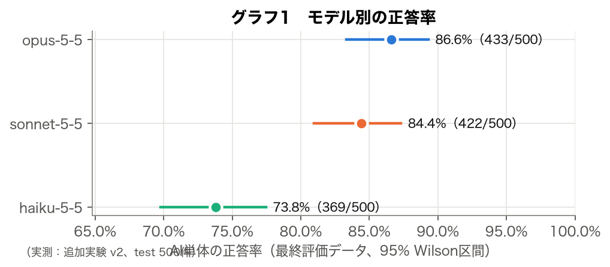
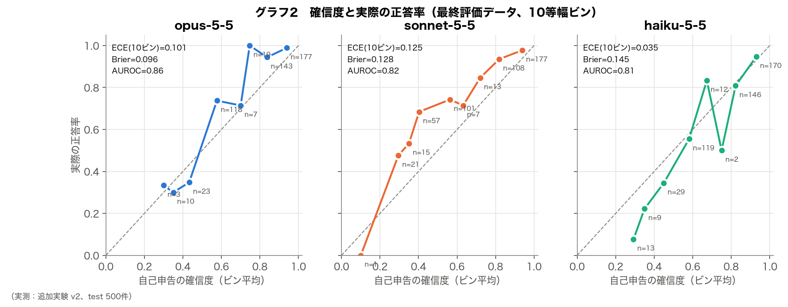
| モデル | 正答率 | 95%区間 | 誤答 | 確信度平均 | Brier | ECE | AUROC | AUROC 95%区間 | AURC |
|---|---|---|---|---|---|---|---|---|---|
| Opus 5.5 | 86.6% | 83.3–89.3 | 67 | 0.78 | 0.096 | 0.100 | 0.864 | 0.819–0.906 | 0.037 |
| Sonnet 5.5 | 84.4% | 81.0–87.3 | 78 | 0.72 | 0.128 | 0.126 | 0.818 | 0.770–0.863 | 0.054 |
| Haiku 5.5 | 73.8% | 69.8–77.5 | 131 | 0.75 | 0.145 | 0.044 | 0.814 | 0.771–0.855 | 0.113 |
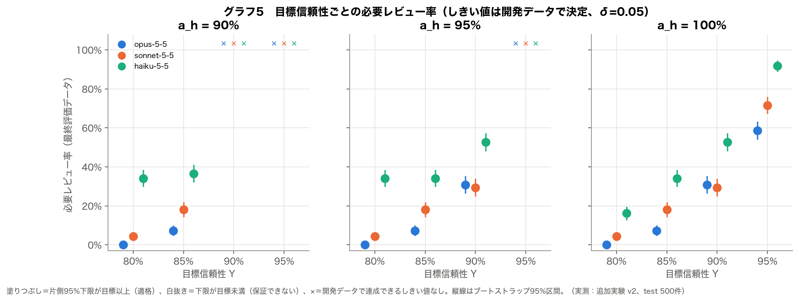
| 目標 Y | Opus | Sonnet | Haiku | Opus−Sonnet の差 |
|---|---|---|---|---|
| 80% | 0.0% | 4.4% | 16.2% | −3.2pt（−9.4〜0.0） |
| 85% | 7.2% | 18.0% | 34.0% | −10.5pt（−17.2〜−0.2） |
| 90% | 30.8% | 29.4% | 52.6% | −1.5pt（−14.0〜+9.8） |
| 95% | 58.6% | 71.6% | 91.8% | −13.6pt（−19.8〜−8.8） |
a_h=100%、δ=0.05。最終評価データでのレビュー率。12件すべて片側95%下限で適格。差はしきい値選定込みのブートストラップによる平均と95%区間。
探索的正答率が近い Opus と Sonnet で、必要レビュー率に差は出たか。目標85%と95%では Opus のほうが少なく、差の区間は0をまたがなかった。目標90%では差がなかった。事前登録した H3a（目標90%）は判定保留である。目標85%・95%の差は、仮説を立てずに見つけた探索的な観察として扱う。
さらに、δ=0.05 の下で目標95%を課すと、開発データ上で「採用分に誤答ゼロ」を求めることになる。選ばれるしきい値は、開発データで最も確信度の高い誤答1件で決まる（Opus 0.85、Sonnet 0.90）。δ=0 にすると、Opus 30.8%、Sonnet 29.4% とほぼ同じになった。目標95%の差は、こうした少数の高確信度の誤答に左右されている。
探索的H6 が不支持だったため、原因を調べた。開発データから100件または500件を1,000回抜き出してしきい値を選び直し、最終評価データ上の事後最小レビュー率（オラクル）とのずれを測った（目標90%、a_h=100%）。
統計的な保証を付けるには余裕が要り、その余裕が人手を増やす。v1 で見えた過剰レビューの主な原因は、件数の少なさではなく、この余裕だった。
| モデル | δ | 偏り（100件） | 偏り（500件） | 適格率（500件） |
|---|---|---|---|---|
| Opus | 0 | −0.4pt | −0.5pt | 7% |
| 0.025 | +7.2pt | +7.2pt | 70% | |
| 0.05 | +15.6pt | +17.5pt | 100% | |
| Sonnet | 0 | −3.5pt | −0.7pt | 0% |
| 0.025 | +2.0pt | +1.1pt | 20% | |
| 0.05 | +6.5pt | +8.1pt | 92% | |
| Haiku | 0 | −0.8pt | 0.0pt | 1% |
| 0.025 | +5.5pt | +3.4pt | 38% | |
| 0.05 | +12.1pt | +16.8pt | 98% |
偏り＝選定したレビュー率 − オラクル（Opus 7.2%、Sonnet 18.0%、Haiku 34.0%）の平均。results_v2/exploratory_margin.csv。
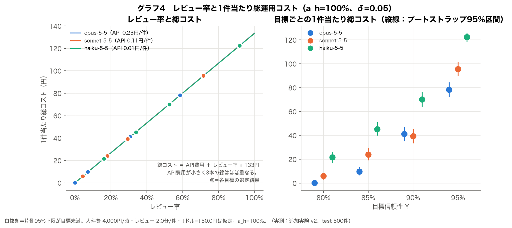
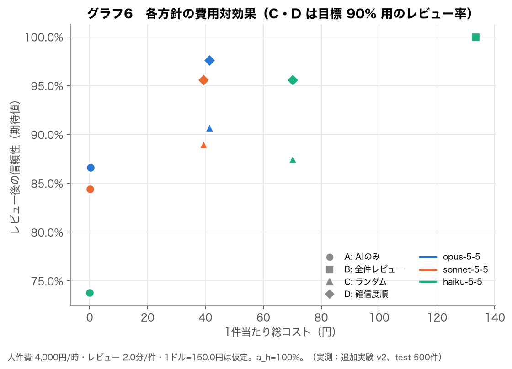
| モデル | A：AIのみ | C：ランダム | D：確信度順 | レビュー率 | 総コスト/件（D） | API費用/件 |
|---|---|---|---|---|---|---|
| Opus 5.5 | 86.6% | 90.7% | 97.6% | 30.8% | 41.3円 | 0.23円（1.33） |
| Sonnet 5.5 | 84.4% | 89.0% | 95.6% | 29.4% | 39.3円 | 0.11円（0.67） |
| Haiku 5.5 | 73.8% | 87.5% | 95.6% | 52.6% | 70.1円 | 0.006円（0.03） |
数値はレビュー後の信頼性（期待値、a_h=100%、目標90%用のレビュー率）。全件レビューは1件約133.5円。API費用の括弧内はキャッシュが効かなかった場合の値。
| 項目 | v1（test 200件） | v2（test 500件） |
|---|---|---|
| 正答率 Opus / Sonnet / Haiku | 88.0 / 82.5 / 76.0% | 86.6 / 84.4 / 73.8% |
| Opus−Sonnet の正答率差 | +5.5pt（p=0.002） | +2.2pt（p=0.052） |
| 目標90%の必要レビュー率 | 29.0 / 26.0 / 28.5% | 30.8 / 29.4 / 52.6% |
| 確信度順 − ランダム（目標90%用） | +6.6〜10.2pt | +6.6〜8.1pt |
| 目標90%の総コスト/件 | 38.9 / 34.8 / 38.0円 | 41.3 / 39.3 / 70.1円 |
v1 では Haiku の必要レビュー率が他と同程度に見えたが、v2 では明確に多かった。v1 は開発データ100件でしきい値を選んでいたため、たまたま低いレビュー率が選ばれていた可能性が高い（v1 の Haiku は目標90%で適格にならなかった）。小規模な評価だけでモデルを選ぶ危うさを示す例である。
実測v2 では、自己申告の確信度が約20種類の値に集中し、しきい値の段差が必要レビュー率を左右した。v3 では、各モデルの予測を固定したまま、振り分けに使う信号だけを入れ替えた。予測が同じなので正答率は構造上まったく同じになり、必要レビュー率の違いはすべて振り分けから来る。仮説6つは実行前に固定した（docs/hypotheses_v3.md）。
| 信号 | 定義 | 追加の呼び出し |
|---|---|---|
| 自己申告 | v1・v2 と同じ。分類と同時に申告させた確信度 | なし |
| 一致度 | 同じプロンプトでさらに4回分類させ、元の予測と一致した割合 | 4回 |
| 自己検証 | 問い合わせ文と予測ラベルを見せ、そのラベルが正しい確率を別の呼び出しで答えさせる | 1回 |
| 組み合わせ | 上の3つの単純平均（重みは学習しない） | 5回 |
dev は v2 の500件、test は v1・v2 と重複しない新しい500件。費用 $12.56（上限は承認を得て $30 に変更）。新規呼び出し約16,400件、失敗0件。
| 仮説（v3） | 判定 | 根拠（95%区間） |
|---|---|---|
| H1 AUROC：組み合わせ > 自己申告 | 判定保留 | 差は +0.002〜+0.006 で、区間は0をまたぐ |
| H2 必要レビュー率：組み合わせ < 自己申告（主仮説） | 判定保留 | Opus −7.3pt（−17.2〜+2.0）、Sonnet −1.8pt、Haiku −9.9pt（−18.8〜+2.0） |
| H3 AUROC：一致度 > 自己申告 | 不支持 | −0.24〜−0.34 で有意に低い |
| H4 AUROC：自己検証 ≒ 自己申告 | 支持 | 差は −0.017〜−0.006、区間は ±0.05 以内 |
| H5 下限法は δ法よりレビューが少なく、適格率90%以上 | 判定保留 | レビュー率は 7〜16pt 減ったが、適格率は 66〜86% |
| H6 組み合わせ信号は追加費用込みで総コストを下げる | 支持（点推定） | Opus 36.8→17.6円、Sonnet 32.6→26.0円、Haiku 65.3→52.8円。区間は0をまたぐ |
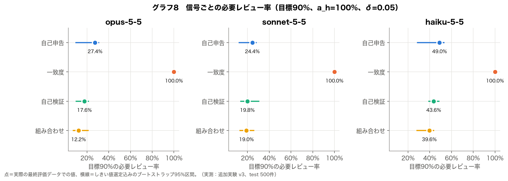
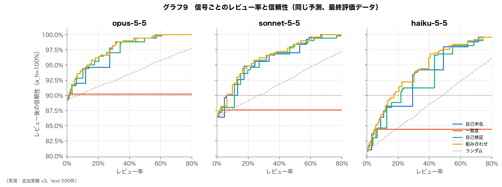
実測Haiku の予測（正答率 76.2%）はそのままに、Opus の検証を含む組み合わせ信号（自己申告・Opus の検証・他モデル一致の平均）で振り分けると、目標90%に必要なレビュー率が 48.6% から 24.8% に下がった（差 −22.9pt、しきい値選定込みの95%区間 −31.6〜−8.6）。Opus の検証だけで振り分けた場合は 25.2% だった。予測は同じなので正答率はまったく同じである。正答率が同じでも、必要なレビュー量は振り分け方で大きく変わる。これは論文の中心的な主張と矛盾しない。ただし比べているのは「Haiku 単独」と「Haiku＋Opus 検証の2モデルの系」であり、別々のシステムの正答率がほぼ同じでレビュー率が違うという論文の観察とは、別の種類の証拠である。本プロジェクトで、事前に定めた基準（主仮説の弱い形）を満たした初めての証拠である。
v3 では、同じモデルの中で信号を工夫しても誤り検出の性能は上がらなかった。v4 では情報源を別のモデルに変えた。予測は引き続き固定し、次の信号を比べた（仮説は実行前に固定、docs/hypotheses_v4.md）。
test は v1〜v3 と重複しない新しい500件。費用 $5.37（累計 $20.80）。新規呼び出し 7,470件、失敗0件。
| 仮説（v4） | 判定 | 根拠（95%区間） |
|---|---|---|
| H1 Opus による検証 > 自己申告（Sonnet・Haiku） | 支持 | AUROC +0.092、+0.113 |
| H2 他モデル一致 > 自己申告 | 不支持 | Opus −0.254、Sonnet −0.121、Haiku −0.020 |
| H3 必要レビュー率：組み合わせ < 自己申告（主仮説） | 判定保留 | 3モデルすべての基準は満たさず。Haiku −22.9pt（−31.6〜−8.6）で弱い形は成立 |
| H4 検証モデルが強いほど性能が高い | 支持 | +0.050（Opus 対 Sonnet が Haiku を検証）、+0.038（Sonnet 対 Haiku が Opus を検証） |
| H5 別モデルの情報を加えても総コストが下がる | 支持（点推定） | Opus 39.5→29.1円、Sonnet 36.9→31.5円、Haiku 64.8→33.3円 |
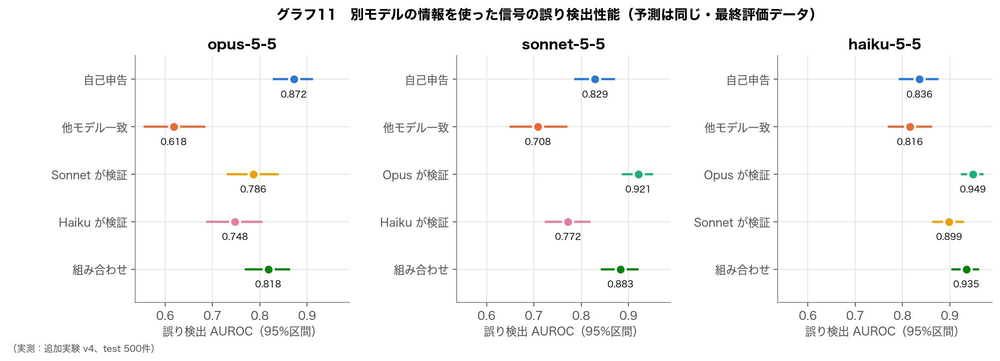
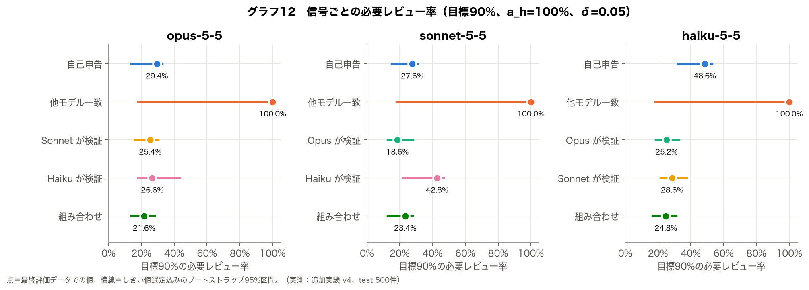
実測Haiku に答えさせて Opus に検証させる構成と Opus 単独の総コストの差は、示せなかった。この構成は、人間のレビューが常に正しい（a_h=100%）という仮定のもとで、目標90%の片側下限で適格と判定された。点推定では 31.4円 対 37.3円だった。しかし、しきい値の選び方の揺れまで含めると差は +1.9円（95%区間 −10.4〜+13.8）で、安いとも同程度とも言えない（主仮説 H1 は判定保留）。目標を85%にすると、Opus 単独のほうが安かった（差 +12.0円、区間 +0.3〜+19.5、探索的）。一方、v4 の結果「Opus の検証で Haiku の必要レビュー率が約半分になる」は、新しい test でも再現した（−23.7pt、区間 −32.4〜−7.4。dev としきい値は v4 と同じ）。
v4 で探索的に見えた「安いモデル＋強い検証モデルは強いモデル単独より安い」を、6つの運用構成の総コスト比較として事前登録して確かめた（docs/hypotheses_v5.md）。総コストの区間は、開発・最終評価の両方を再標本化し、毎回すべての構成のしきい値を選び直して求めた。test は v1〜v4 と重複しない新しい500件。費用 $2.81（累計 $23.62）。
| 構成 | AI正答率 | 必要レビュー率 | 総コスト/件 |
|---|---|---|---|
| Opus 単独 | 87.2% | 27.8% | 37.3円 |
| Sonnet 単独 | 85.4% | 26.8% | 35.9円 |
| Haiku 単独 | 79.2% | 48.4% | 64.5円 |
| Haiku＋Opus 検証（全件） | 79.2% | 23.4% | 31.4円 |
| Haiku＋Opus 検証（確信度の低い34%だけ） | 79.2% | 48.4% | 64.6円 |
| Sonnet＋Opus 検証（全件） | 85.4% | 18.2% | 24.6円 |
| 仮説（v5） | 判定 | 根拠（95%区間） |
|---|---|---|
| H1 総コスト：Haiku＋Opus 検証 < Opus 単独（主仮説） | 判定保留 | 差 +1.9円（−10.4〜+13.8） |
| H2 Haiku＋Opus 検証は適格（a_h=100% の仮定） | 支持 | 下限 0.952、適格率 99% |
| H3 検証を一部に絞ってもレビューはほぼ増えない | 判定保留 | +23.3pt（+4.4〜+32.4）。総コストは約2倍で、実質的に効果なし |
| H4 v4 の再現（Haiku、新しい test。dev は v4 と同じ） | 支持 | −23.7pt（−32.4〜−7.4） |
| H5 Sonnet でも Opus の検証でレビューが減る | 判定保留 | −3.9pt（−12.0〜+4.4） |
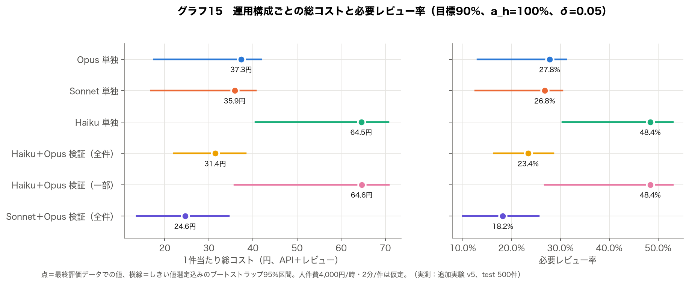
探索的仮定v5 の主分析は、人間のレビューが常に正しい（a_h=100%）と仮定している。論文の主仮定は a_h=90% である。同じ手順（dev で選び、test の片側下限で判定）で、a_h と目標を変えて判定し直した。セルは「必要レビュー率／1件当たり総コスト」。「不能」は dev の段階で目標に届く方針がなかったことを示す。値が入っているセルは、すべて test で適格だった。
| 構成 | 目標85% | 目標90% | ||||
|---|---|---|---|---|---|---|
| a_h=90% | 95% | 100% | a_h=90% | 95% | 100%（主分析） | |
| Opus 単独 | 6.0%／8.3円 | 6.0%／8.3円 | 6.0%／8.3円 | 不能 | 27.8%／37.3円 | 27.8%／37.3円 |
| Sonnet 単独 | 13.6%／18.3円 | 13.6%／18.3円 | 13.6%／18.3円 | 不能 | 26.8%／35.9円 | 26.8%／35.9円 |
| Haiku 単独 | 33.6%／44.8円 | 31.0%／41.3円 | 31.0%／41.3円 | 不能 | 48.4%／64.5円 | 48.4%／64.5円 |
| Haiku＋Opus 検証（全件） | 16.6%／22.4円 | 16.6%／22.4円 | 14.0%／18.9円 | 不能 | 26.0%／34.9円 | 23.4%／31.4円 |
| Haiku＋Opus 検証（一部） | 27.2%／36.4円 | 20.2%／27.0円 | 18.8%／25.2円 | 不能 | 48.4%／64.6円 | 48.4%／64.6円 |
| Sonnet＋Opus 検証（全件） | 8.0%／11.0円 | 8.0%／11.0円 | 6.4%／8.9円 | 不能 | 23.4%／31.5円 | 18.2%／24.6円 |
探索的仮定次に、レビューの正確さを AI の正誤で分けた。AI が正しい案件を正しいまま保つ確率を p_c、AI の誤答を正しく直せる確率を p_w とする（主分析は p_c=p_w=100%）。AI が自信を持って間違えた案件ほど、人間もつられて見逃すおそれがある。目標90%で、dev からしきい値を選び直した結果：
| 構成 | p_w=100%（主分析） | p_w=90% | p_w=80% | p_w=70% | p_c=99%・p_w=80% |
|---|---|---|---|---|---|
| Opus 単独 | 27.8%／37.3円 | 27.8%／37.3円 | 27.8%／37.3円 | 35.2%／47.2円 | 27.8%／37.3円 |
| Sonnet 単独 | 26.8%／35.9円 | 26.8%／35.9円 | 36.0%／48.1円 | 不能 | 38.2%／51.1円 |
| Haiku 単独 | 48.4%／64.5円 | 48.4%／64.5円 | 90.6%／120.8円 | 不能 | 不能 |
| Haiku＋Opus 検証（全件） | 23.4%／31.4円 | 31.4%／42.1円 | 50.0%／66.9円 | 不能 | 不能 |
| Sonnet＋Opus 検証（全件） | 18.2%／24.6円 | 23.4%／31.5円 | 29.6%／39.8円 | 不能 | 35.6%／47.8円 |
再現：python -m ready_eval --config config_v5.yaml robustness（API 費用なし）。結果：results_v5/robust_*.csv。p_c・p_w は仮定値で、実測ではない。
探索的v5 の予測を母集団とみなし、開発・最終評価の件数を250〜16,000件に変えて再標本化した。毎回しきい値を選び直し、両側5%・検出力80%で見分けられる最小の総コスト差を求めた（API 費用なし、docs/power_analysis.md）。
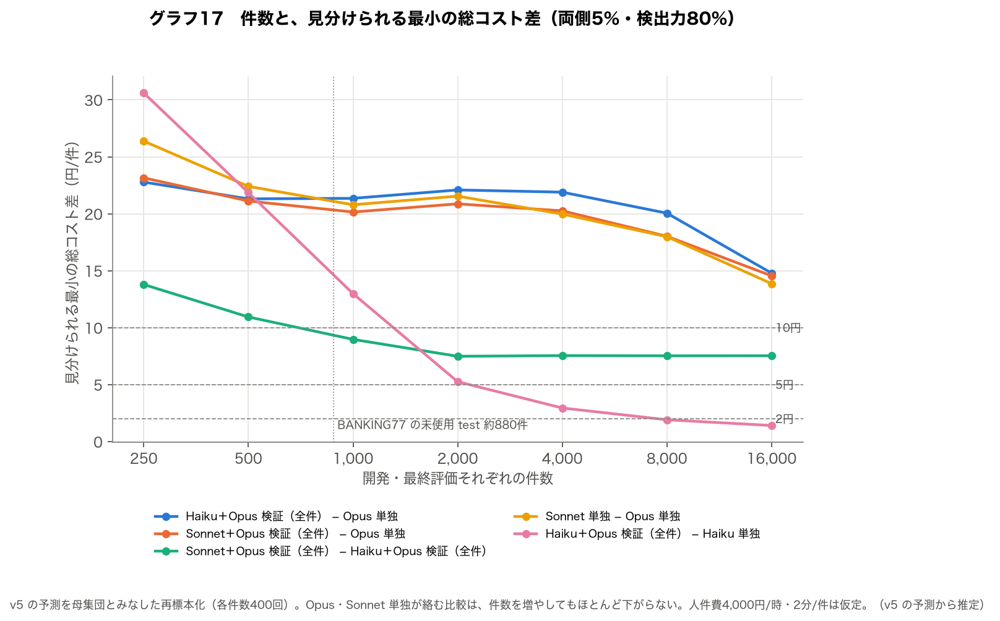
一部は確認できた。ただし、論文と同じ形（正答率がほぼ同じでレビュー率がはっきり違う）を、事前登録した仮説として示すことはできなかった。
READY の考え方の中心は、開発データで決めた方針を別のデータで統計的に保証することにある。今回の結果では、保証のための安全余裕（δ=0.05）が、目標90%で6〜18pt の追加レビューを生んだ。余裕を外すと、事後的に最適なレビュー率をほぼ正確に選べるが、保証はほとんど通らない。品質保証として出すのか、運用の目安として出すのかで、必要な人手が大きく変わる。これはモデル選定とは別に、契約や SLA の設計で決めるべき点である。
予測を固定して信号だけを変える実験では、正答率が同じでもレビュー率が変わりうることを点推定では示せたが、事前に決めた基準では確かめられなかった。分かったのは次の3点である。同じモデルを同じ条件で繰り返し呼んでも「迷い」は測れない。聞き直し（自己検証）は自己申告と同じ情報しか持たない。信号の細かさが、段差による過剰レビューを減らすのに効いている可能性がある。信号を改善する余地は、別モデルによる検証や入力の言い換えなど、情報源を変える方向にあると考えられる。
v4 で、同じ予測のまま必要な人手を大きく減らせる例が得られた。効いたのは、今回の3モデルでは、対象より強いモデルによる検証だった。一方で、複数モデルの多数決のような「一致」は、モデル間で誤りが相関しているため信頼性の上限を作ってしまった。実務では、安いモデルで全件を処理し、強いモデルには「検証だけ」をさせて、怪しい案件を人間に回す構成が候補になる。ただし、今回のタスクは単発の分類であり、強いモデルの検証費用が小さく済んだ条件での結果である。v5 では、この構成と強いモデル単独の総コストの差は示せず、目標を85%にすると強いモデル単独のほうが安かった。また、検証対象を弱いモデルの確信度で絞ると、弱いモデルが自信を持って間違える案件を見逃し、効果が消えた。
人間の成功率を90%と仮定すると、目標90%以上はどのモデル・どの構成でも開発データの段階で達成できなかった（v2〜v5）。人間が AI の誤答だけを見逃しやすいと仮定すると、構成の順位も入れ替わる（v5、誤答の20%を見逃すと最も安いのは Opus 単独になる）。人間の精度は「あれば良い」前提ではなく、達成できる信頼性の上限と構成の選択を決める設計変数である。本レポートの適格判定と総コストの順位は、a_h=100% の仮定のもとでの結果として読む必要がある。
提案書・評価計画に入れる表の例
| 項目 | 記載内容 |
|---|---|
| 品質目標 | 業務上許容できる誤り率と、その根拠 |
| AI単体の正答率 | 区間付き |
| 必要レビュー率 | 品質目標ごと。区間と、保証の有無（安全余裕の値） |
| 振り分け信号 | 何を確信度に使うか、AUROC |
| 1件当たり総コスト | API＋人件費、前提の単価と時間 |
| 人間側の仮定 | レビュー成功率、レビュー時間（実測か仮定か） |
| 評価データ | 開発・検証の件数、分け方 |
| 再評価の条件 | モデル更新、入力の傾向変化 |
銀行問い合わせの77分類で、予備実験（200件）と、仮説を事前に固定した追加実験（500件）を行った。
「企業でAIエージェントを導入する際には、正答率だけでなく、必要な信頼性を達成するための人間のレビュー率と総運用コストを評価すべきである」という主張は、単発の分類タスクでの今回の結果と矛盾しない。エージェントへの適用は検証していない。API 単価の比較だけでは総コストの順位を誤りうること（v2、探索的。正答率の低さが人件費で増幅された）を示した。また、同じ回答に強いモデルの検証を加えると必要な人手が約半分になりうることを示した。v4 の主仮説は判定保留で、事前に定めた基準のうち弱い形（少なくとも1モデルで区間が0未満）を Haiku で満たしただけである。v5 では、この結果の再現を事前登録した仮説 H4 が支持された（dev は v4 と同じ）。一方、別々のモデルどうしで正答率がほぼ同じなのにレビュー率が違うという論文の観察そのものは、事前登録した形では再現できていない（v2）。モデルの一般的な優劣は断定できない。